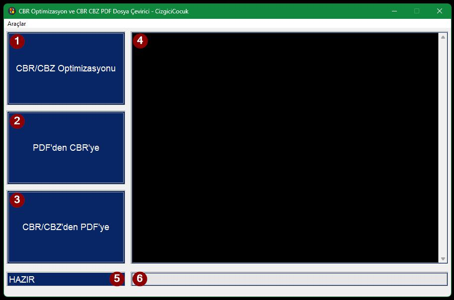
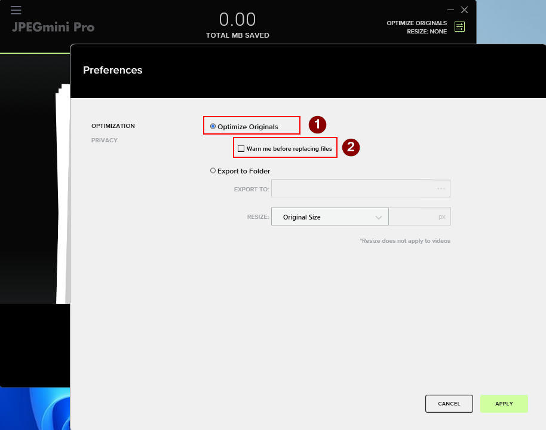
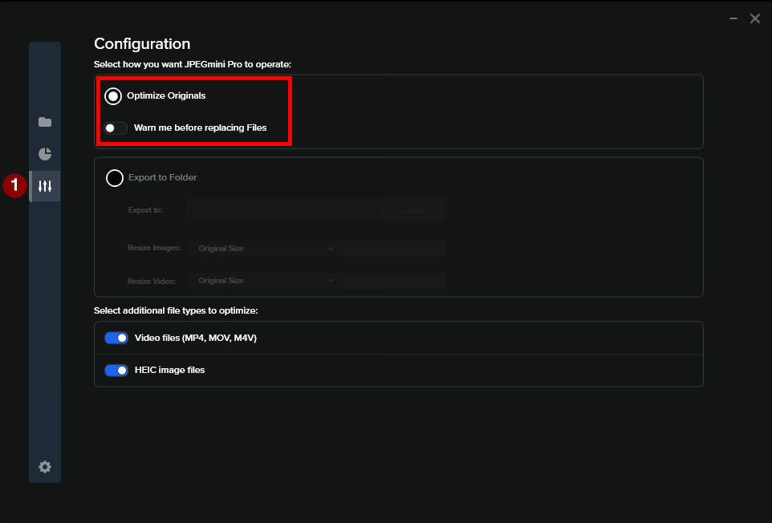

CBX Tools Nedir?
CBX Tools, CBR, CBZ ve PDF dahil olmak üzere yaygın çizgi roman dosya
formatlarını dönüştürmek ve optimize etmek için tasarlanmış bir yardımcı programdır. CBX Tools, görüntü
çözünürlüğünü ve DPI ayarlarını koruyarak, yüksek kaliteli sonuçlar için neredeyse
kayıpsız dönüştürme ve optimizasyon sağlamayı amaçlar.
CBX Tools, üç ana işlev sunar:
- CBR/CBZ Optimizasyonu – CBR ve CBZ çizgi roman dosyalarını, kurtarma
kaydı ekleyerek RAR formatında CBR uzantısı ile kaydeder. İsteğe bağlı olarak,
jpegoptim ya da JPEGMini Pro kullanarak JPEG görüntülerini optimize eder.
- CBR/CBZ'den PDF'ye Dönüşüm – CBR ve CBZ dosyalarını PDF formatına dönüştürür.
- PDF'den CBR/CBZ'ye Dönüşüm – PDF dosyalarını CBR formatına dönüştürür.
Gereksinimler
CBX Tools, CBR/CBZ dosyalarını WinRAR
yardımıyla açar ve sıkıştırır. WinRAR uygulaması, ZIP dosyalarını açmada ve RAR dosyalarını işlemede
en hızlı performansı sağlar. CBX Tools programının kullanılabilmesi için, ücretli olan WinRAR
bilgisayarda kurulu olmalıdır.
Opsiyonel Gereksinimler
Kullanıcılar JPEG dosyalarının boyutunu önemli ölçüde azaltırken çözünürlük ve görüntü kalitesini
koruyan JPEGMini Pro yu JPEG optimizasyonu için
kullanabilirler. Bu durumda ücretli olan JPEGMini Pro, bilgisayarda yüklü olmalıdır.
Kullanıcı Arayüzü

1. Sürükle-ve-
Bırak Alanları (1, 2 ve 3)
Bunlar, kullanıcıların dosyalar, klasörler veya her bunların karışımını işleme almak için
sürükleyip
bırakabilecekleri bölgelerdir. Her bir alan, belirli bir işlevle ilişkilidir:
- Alan 1: CBR/CBZ Optimizasyonu görevleri için
tasarlanmıştır, kullanıcıların kaliteyi bozmadan çizgi roman dosyalarını daha verimli
depolama ve hataya karşı korunma için optimize etmelerini sağlar.
- Alan 2: PDF'den CBR dönüşümü için kullanılır,
kullanıcıların PDF dosyalarını çizgi roman formatlarına dönüştürmelerini sağlar.
- Alan 3: CBR/CBZ'den PDF dönüşümleri yapar, kullanıcıların
çizgi roman dosyalarını standart PDF belgelerine dönüştürmelerini sağlar.
2. Bilgi Alanı (4)
Bu büyük siyah panel, mevcut işlemle ilgili ayrıntılı günlükleri, geri bildirimleri ve durum
güncellemelerini sağlayan dinamik bir görüntüleme alanıdır. Kullanıcıları gerçek zamanlı olarak
işlem hakkında bilgilendirir, şeffaflık ve netlik sağlar.
3. Mevcut Adım Alanı (5)
Bu alan, devam etmekte olan işlemin mevcut adım veya aşamasını görüntüler. Kullanıcıların sürecin
nerede olduğunu takip etmelerini sağlar, böylece her zaman programın ne yaptığının farkında
olurlar.
4. İlerleme Çubuğu Alanı (6)
Devam eden görevin ilerlemesini görsel olarak göstermek için ayrılmış bir alan. İlerleme çubuğu,
işlemin ne kadarının tamamlandığını görsel bir şekilde temsil eder.
Belirgin şekilde işaretlenmiş ve düzenlenmiş bölümleriyle CBX Tools, kullanıcıların
çizgi roman dosyalarını verimli bir şekilde yönetmelerini, optimize etmelerini ve dönüştürmelerini
sağlar.
İşlemler
1. CBR ve CBZ Optimizasyonları
Bu kutuya sürüklenen dosyalar ve/veya klasörlerdeki tüm CBR ve CBZ dosyaları, verimliliği ve
güvenilirliği artırmak için bir dizi işleme tabi tutulur. Diğer dosya formatları göz ardı
edilir. İlk olarak, dosyalar WinRAR kullanılarak çıkartılır. Eğer JPEG Optimizasyonu, Ayarlar
menüsünde etkinleştirilmişse, tüm JPEG dosyaları, çözünürlük ve DPI değerlerini koruyarak
depolama alanı tasarrufu sağlamak için seçilen yöntemle optimize edilir. JPEGMini Pro ile
optimizasyon için, programın kurulu ve Opsiyonel bölümde belirtildiği şekilde yapılandırılmış
olması gerekirken, jpegoptim ek bir kurulum gerektirmez. JPEGMini Pro, insan gözüyle daha az
algılanan ayrıntılar ve renk verileri gibi gereksiz görüntü bilgilerini kaldırarak, bazı
dosyalarda %50'ye kadar alan tasarrufu sağlar ve yüksek görsel kaliteyi korur. Seçildiğinde,
jpegoptim benzer bir şekilde çalışır, ancak sağladığı alan tasarrufu genellikle daha küçüktür.
Bu ücretsiz araç, CBX Tools ile tamamen entegre edilmiştir. Son olarak, optimize edilen
görüntüler ve XML uzantılı herhangi bir yardımcı dosya, WinRAR kullanılarak bir CBR dosyasına
yeniden derlenir ve Ayarlar menüsünde belirtilen kurtarma kaydı eklenir. Bu kurtarma kaydı,
arşiv bozulursa verilerin geri yüklenmesine yardımcı olur, böylece eksik veya hasar görmüş
bilgiler onarılabilir.
2. PDF'den CBR'ye Dönüşüm
PDF dosyalarını CBR'ye dönüştürürken, dosyaları, klasörleri veya dosya ve klasör
kombinasyonlarını bu kutuya bırakabilirsiniz. Yalnızca PDF dosyaları işlenir; diğer dosya
formatları göz ardı edilir. Her bir PDF dosyasının içeriğine göre, sayfalar görüntü olarak
çıkartılır. JPX, PBM, PGM ve PPM gibi dosya formatları JPEG formatına dönüştürülürken, PNG ve
BMP dosyaları olduğu gibi kalır. Eğer JPEG Optimizasyonu Ayarlar menüsünde etkinleştirilmişse,
tüm JPEG dosyaları seçilen yöntemle optimize edilir ve depolama alanı tasarrufu sağlanırken
çözünürlük ve DPI değerleri korunur. Son olarak, optimize edilen görüntü dosyaları, bir kurtarma
kaydıyla
birlikte WinRAR kullanılarak CBR dosyasına dönüştürülür.
3. CBR/CBZ'den PDF'ye Dönüşüm
CBR/CBZ dosyalarını PDF'ye dönüştürürken, dosyaları, klasörleri veya dosya ve klasör
kombinasyonlarını bu kutuya bırakabilirsiniz. Yalnızca CBR ve CBZ dosyaları işlenir; diğer tüm
dosya formatları göz ardı edilir. Seçilen CBR ve CBZ dosyaları önce WinRAR kullanılarak
açılır. Eğer JPEG Optimizasyonu Ayarlar menüsünde etkinleştirilmişse, tüm JPEG dosyaları
seçilen yöntemle optimize edilir ve çözünürlük ve DPI değerleri korunarak boyutları küçültülür.
Son olarak, optimize edilen görüntü dosyaları bir PDF'ye dönüştürülür.
Opsiyonel: JPEGMini Pro'yu Nasıl Yapılandırırım
JPEGMini Pro lisansınız varsa ve JPEG optimizasyonu için CBX Tools ile kullanmak
istiyorsanız, programın aşağıdaki resimlerde gösterildiği gibi yapılandırıldığından emin olmanız
gerekir. CBX Tools, JPEGMini Pro'nun 3.3.x ve 4.1.x sürümleriyle test edilmiştir.
Orijinalleri Optimize Et - SEÇİLDİ
Dosyaları değiştirmeden önce beni uyar - SEÇİLMEDİ
JPEGMini Pro 3.x

JPEGMini Pro 4.x
